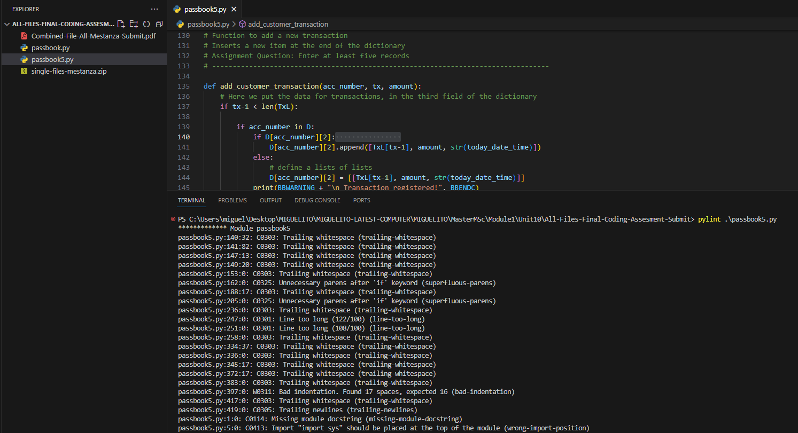
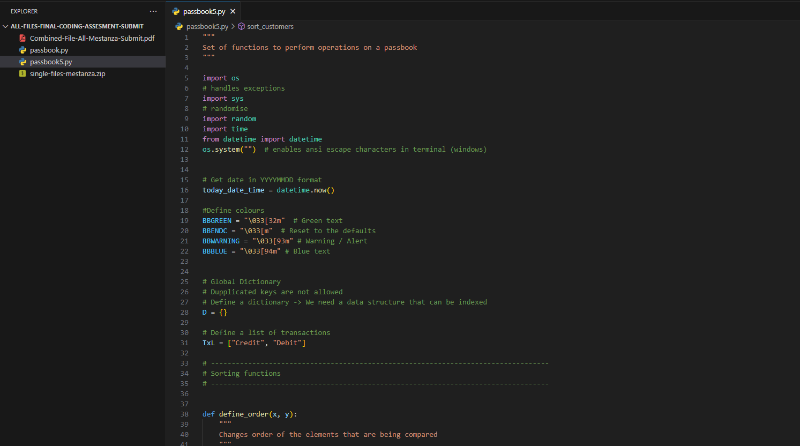
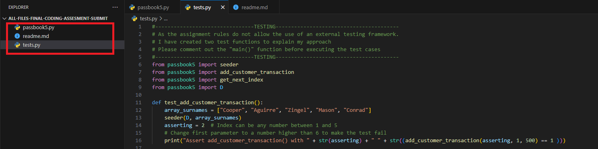

Quality Management Strategy
e-Portfolio Activity: Improving Code Quality. Refer to the Mertz (2019) resource. Use some Python code which you have developed in the past and apply at least 3 of the strategies presented at the source to improve its quality.
For this exercise, I will use a project I wrote in the first module of this course. Using Pylint, Flake8 on VScode, I will apply the three recommendations stated by Mertz (2019).
Part 1
After running Pylint on the python file, several suggestions were listed, including unnecessary elses, variables that didn't comply with the snake_case naming style, unused variables, importing libraries that should be at the top of the script, etc.

After applying the recommendations from Pylint, the file looks like the below image.

After running using flake8, the errors were more specific and more strict. Block comments should start with '#', at least two spaces before the inline comment, line too long (80 > 79 characters), expected two blank lines, etc.
All of these recommendations were applied and the file looked like the below image.

Automated tools allow us to write clean code, respecting the standards and complying with best coding practices.
Part 2
Docstring and comment formatting were applied in the previous step as part of applying flake8.
Part 3
For this simple project, I have structured the files as shown in the screenshot below. A test file and a readme file were added.

References
Mertz, J. (2019) Writing Clean and Pythonic Code. Available From:
https://docslib.org/doc/9751240/writing-clean-and-pythonic-code [Accessed 14 November 2023]
Reading notes on Quality Project Management Strategy
The IEEE defines Quality as the group of characteristics of a product or service that represents its ability to satisfy a specific need.
A quantitative measure of an attribute that affects software quality is called a quality metric.
The achievement of levels of quality is the responsibility of the project manager.
The additional work that has to be done due to taking a shortcut solution is called technical debt.
Time cost and quality are the constraints to take into account (triple constraints)
PMI
A situation of a quality output that avoids the technical debt within the triple constraints needs monitoring to achieve quality metrics that can allow the application of corrective actions if needed.
As quality is relative, the attributes and ways to measure the quality have to be previously agreed upon with the client to apply tests that can indicate that the quality has been achieved.
According to PMI, quality management has three perspectives: quality planning, quality assurance, and quality control.
Quality planning. During the quality planning stage, identify the appropriate quality metrics.
Quality assurance. Monitor all processes, methods and activities and ensure they comply with the defined standards.
Quality control. Activities to evaluate if the product meets the quality requirements. Validate the deliverables and satisfy the stakeholder's quality requirements.
ISO/IEC 25010
This standard includes six characteristics of quality (recommendation 9126): functionality, reliability, effectiveness, usability, maintainability and portability.
In recommendation 25010, ISO / IEC includes eight characteristics of quality. Functional Suitability, performance efficiency, compatibility, usability, reliability, security, maintainability and portability.
Quality Management Models
The quality management model by McAll (1977) includes eleven characteristics. Integrity, reliability, usability, accuracy, efficiency, maintainability, testability, flexibility, interoperability, reusability and portability. The matrix considered by this author includes product revision (testing), product transition (adaptation to changes) and product operations (user experience).
Activity
Please answer the following questions:
Why do you think that so many frameworks have evolved around the concept of quality metric definition?
As the quality can be relative, the models evolve to cover the relativity and the dynamism of the characteristics that define quality. Measuring the quality is the ultimate way of determining if the quality of the product or service matches the expectations of the stakeholders. This way, the models can be more precise and help managers manage the quality of a project more accurately.
Which one is the current one?
As it is constantly updated, the EFQM is the currently most recognised management framework to support quality (EFQM, N.D.).
Which one(s) is applicable to agile methodologies?
EFQM allows the continuation of Agile practices, as the processes are continuously analysed and optimised (Mooncamp, 2022). Agile can also integrate into ISO 9001.
Which one do you consider to be the most suitable, and why?
EFQM is globally recognised; its newest version is 2020, which means it is permanently updated. It is based on five enablers that are very important: leadership, policy and strategy, people, partnership and resources, and processes. It is based on simple but powerful logic. It allows us to drive performance and, at the same time, remain agile, adaptive and able to evolve (EFQM, N.D.).
References
EFQM (N.D.) The EFQM Model. Available from: https://efqm.org/the-efqm-model/ [Accessed 15
November 2023].
Mooncamp (2022) Understanding the EFQM model: A comprehensive management system with focus on
quality. Available from: https://mooncamp.com/blog/efqm-model/ [Accessed 15 November 2023].